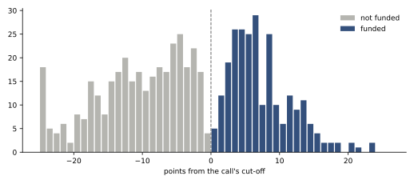
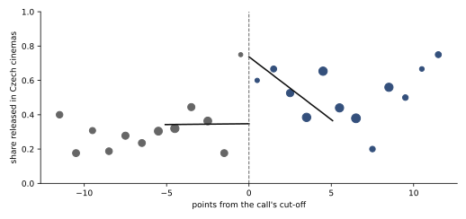
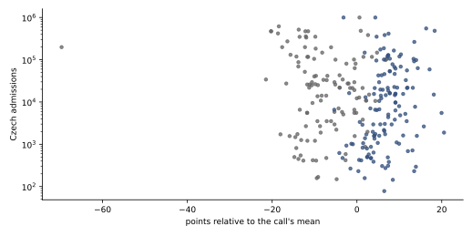

Research · Czech film fund · production calls 2016–2021
Does a film-fund grant get a Czech film into cinemas?
At the funding cut-off of 40 calls, the estimated jump in release in Czech cinemas is positive but its interval includes zero, so it is labelled underpowered; whether the points of the fund's Council foresee audiences could not be told.
- release jump at the cut-off
- +39 pp percentage points · 95 % CI −14 to +100 · underpowered
- points against admissions, within call
- ρ = −0.09 rank correlation, −1 to +1 · 95 % CI −0.22 to +0.04, calls resampled · 254 applications of released films, repeats included
- rejected near the cut-off, funded in a later call
- 28 of 88 administrative count · exploratory, not in the registered plan
- production applications studied
- 588 40 calls · administrative count
Overwhelmed? Here's the short version
- The fund funds projects by points until the money runs out, so those near the line are close to alike.
- Just above the line, the estimate points to more releases in Czech cinemas, but zero is within its range: the data are too few to be sure.
- It rests on 182 first applications near the line in 37 calls, on release found by matching titles (82–91 % of released films found) and on Czech cinemas only; across the robustness variants the estimate moves from +3 to +57 percentage points.
- In a count outside the registered plan, a third of the projects rejected near the line were funded later: a "no" was often a "not yet".
- Among released films, points and audiences showed no clear relation either way.
Photo: rawpixel · CC0, toned
Public film funds decide which films are made, but it is hard to say what their money changes, because the projects they fund are the ones that look most likely to succeed anyway. A ranking with a hard budget line offers a way round this. When applications are funded in order of their points until the money runs out, those just above the line and those just below it were judged almost alike, and comparing them estimates the effect of the money itself. Jacob and Lefgren used the funding line of the US National Institutes of Health in this way to estimate what a research grant changes1, and Li asked whether reviewers' scores foresee the later success of what they fund2; the method is set out by Cattaneo, Idrobo and Titiunik3. The Czech film fund publishes, for every call, the points and the award of every application, funded or not, which makes the same two questions answerable for Czech film: does production support change whether a project reaches cinemas and how many people see it, and do the points of the Council, the fund's board that scores applications, foresee audiences.
Data
The State Cinematography Fund, renamed the State Audiovisual Fund in 2025, publishes a decision table for each call: every application with its total budget, the support requested, the Council's points by criterion and in total, and the support awarded45. The 514 tables published between 2014 and 2026 hold 6 026 applications in 261 calls; results for 2015 exist only as PDF documents and are not used. This study takes the production calls of 2016–2021 for feature fiction, documentary, animation and minority co-production, which leaves every project at least four years to be finished and released by 30 September 2026. A project that applied more than once enters with its first application. That gives 588 applications in 40 calls, of which 246 were funded, with a median award of 1.5 million Kč. The animation calls include series and combined development-and-production calls, whose output often goes to television rather than cinemas, so for them a release in Czech cinemas is rare whatever the decision (19 % of funded and 10 % of unfunded animation applications); the registered check on feature-length projects only was not run.
A call drew a median of 14.5 applications, between 2 and 30, and funded a median of 43 % of them. Where the line fell depended on how much money the call had and how strong the field was: the cut-off lay between 61.4 and 84.1 points out of 100, with a median of 75.7, so a project scoring 75 would have been funded in some calls and rejected in others.
Release is read from the premiere lists of the Czech distributors' union, which name every film opening in Czech cinemas from 2016 to 20256, and from LUMIERE, the European Audiovisual Observatory's database of admissions, which lists 999 films with Czech production or co-production from 2014 to 2026 and their Czech admissions7. The fund's tables and the release sources are public; every file used is listed with its SHA-256 hash.
Descriptive: the line is sharp; in every call, every funded application scored above every unfunded one.

How this was done
In every one of the 77 production calls in the tables the line is sharp: every funded application has more points than every unfunded one (fig. 1). The design is a regression discontinuity: it compares applications just above and just below the line. The running variable, the number that decides funding, is an application's points minus its call's cut-off; the treatment is an award above zero; and the estimand, the quantity to be estimated, is the effect of support for a project at the cut-off. It is estimated pooled across calls. A straight line is fitted on each side of the cut-off (local linear), applications closer to the line count more (a triangular kernel), the bandwidth, how many points either side are used, is the one that minimizes mean squared error, and the 95 % confidence intervals are robust bias-corrected, which allows for the curvature a straight line misses, and clustered by call, so applications in the same call are not treated as independent3. The effective sample, the applications inside the bandwidth, is given next to every estimate.
The weak point is linking an application to a released film, because working titles change. The linking was done blind: the code that matched titles never loaded the points or the awards. An exact match of the normalized title within six years of the call counted directly, with a random tenth of them checked by hand; every looser match was checked by hand without the funding status, and the links were frozen before any points were joined. A blind audit of 60 unmatched applications then searched for films released under other titles (see What changed after registration). The second outcome is Czech admissions, analysed as the logarithm of one plus admissions, with zero for a project that was not released; 15 linked projects have no admissions figure and are left out of that outcome.
The Council scores knowing how much money a call has, so it could in principle place projects just above or below the line on purpose. Two checks look for that: a test of whether applications bunch on one side of the cut-off, the local polynomial density test of Cattaneo, Jansson and Ma8, which refines McCrary's9, and a test of whether the budget, the amount requested, the share of the budget requested and the producer's earlier funded applications jump at the cut-off. The last of these was computed with each producer's applications in alphabetical order of title rather than in order of time, and it counts later calls too, so it does not measure what it names; only the first three balance checks are read. The density test is weaker than its p-value, the chance of bunching at least this uneven if there were none, suggests: the cut-off is placed between the last funded and the first unfunded project after the money was allocated, so by construction no application sits right at it and few sit close to it.
How much the data can show was worked out before this analysis joined any outcome, from the points alone. Counting every application, repeat ones included, there were about 250 within five points of the cut-off in 2016–2021; with that many, a difference in the share released of about 25 percentage points would be detected four times in five at the 5 % level. The analysis keeps first applications only, of which 175 lie within five points, so the difference it can detect is larger than 25 points; a difference of 10 points, which would still matter to a producer, would mostly be missed. The labels were fixed accordingly: an interval that excludes zero is "supported", one that stays within ten points of zero is "not supported", and anything between is "underpowered".
The tests
| Question | Registered rule | Result | Label |
|---|---|---|---|
| Q1 · O1 release in Czech cinemas | supported if the 95 % CI excludes 0; not supported if it lies within ±10 pp | +39 pp 95 % CI −14 to +100 · 88 / 94 applications · 37 calls | underpowered |
| Q1 · O2 log(1 + Czech admissions) | supported if the 95 % CI excludes 0; not supported if it lies within ±0.25 | +3.18 95 % CI −2.30 to +9.23 · 86 / 91 · 37 calls | underpowered |
| Q2 · points and admissions, released films | descriptive, no label | ρ = −0.09 95 % CI −0.22 to +0.04 · 254 applications, repeats included · 32 calls | descriptive |
| Validity · bunching at the cut-off | indeterminate if p < 0.05 | p = 0.45 | passes |
| Validity · covariates at the cut-off | indeterminate if any 95 % CI excludes 0 | the three read include 0; the fourth was miscomputed | passes, on three |
Bandwidths: O1 5.1 points, O2 5.1 points on each side of the cut-off. The covariate estimates are, at the cut-off: log budget −0.70 (95 % CI −2.61 to +0.98), log support requested −0.67 (−2.06 to +0.58), share of the budget requested +0.05 (−0.15 to +0.28); the fourth, the producer's earlier funded applications, was miscomputed and is not reported.
Does support change whether a film reaches cinemas?
Across all 588 applications, 50 % of the funded and 29 % of the unfunded projects were linked to a release in Czech cinemas by 30 September 2026. That gap mixes the money with everything that made the Council rank a project highly. At the cut-off the comparison is between projects scored almost alike. There, the share released rises by an estimated 39 percentage points from just below to just above the line, but the 95 % confidence interval runs from −14 to +100 points (fig. 2). With 182 first applications near the line the interval is so wide that it includes both no effect and an effect of +100 points; it includes zero and the design's 25-point bound, so the registered label is underpowered, not "no effect". The plan also asked for this result to be given as a range that bounds the linking errors; that range was not computed (see What changed after registration).
Underpowered: at the cut-off, release in Czech cinemas jumps +39 percentage points, but the interval runs from −14 to +100.

Part of why the jump is hard to measure is in the fund's own records. Of the 88 applications rejected within the bandwidth below the cut-off, 28 were funded in a later production call up to 2026 under the same title and applicant. This count was not in the registered plan, and it is a lower bound, since projects that changed title are not followed. For a third of the near misses, then, the fund's answer was "not yet" rather than "no", and the comparison at the first application measures the effect of being funded at once against being funded later or never. Czech admissions show the same pattern: a positive estimate at the cut-off, +3.18 on the log scale, with an interval from −2.30 to +9.23, labelled underpowered. That outcome, the logarithm of one plus admissions with zero for unreleased projects, mixes whether a film was released with how many people saw it, depends on the unit in which admissions are counted and is driven by the zeros10; it is not an elasticity, a percentage change in admissions, and since its interval includes zero, not even its sign is established.
The near misses can also be followed descriptively. Of the 94 projects funded within the bandwidth above the line, 54 % reached cinemas. Of the 28 rejected projects that were funded in a later call, 54 % did too, and of the 60 not funded in any production call up to 2026, 25 %. These shares are exploratory, outside the registered plan, and not estimates of an effect, because the projects that tried again and succeeded may differ from those that did not. The last two shares are not produced by any committed script.
| Kind of project | Applications | Funded | Released, funded | Released, not funded |
|---|---|---|---|---|
| Feature fiction | 282 | 34 % | 61 % | 36 % |
| Documentary | 187 | 48 % | 55 % | 23 % |
| Animation | 89 | 54 % | 19 % | 10 % |
| Minority co-production | 30 | 40 % | 42 % | 28 % |
Released: linked to a premiere in Czech cinemas by 30 September 2026; administrative counts, descriptive, all 588 applications, not only those near the cut-off. Animation calls include series and combined development-and-production calls, whose output often goes to television, which is why so few animation projects are counted as released.
By kind of project, the gap between funded and unfunded applications is widest for documentaries, where 55 % of funded and 23 % of unfunded projects reached cinemas, and the release share is lowest for animation, where most calls fund series and the fund's support often ends in a television broadcast that these sources do not record. These raw gaps are larger than any credible effect of the money alone, which is the reason for comparing at the line.
Do the Council's points foresee audiences?
Among the 254 applications from these calls whose films reached cinemas and have an admissions figure, the median was 14 100 Czech admissions. The unit is the application, not the project: a film that applied in several calls is counted once per application, although the plan keeps first applications only, and these repeats may make the interval below too narrow. Within a call, the rank correlation (Spearman's ρ, from −1 to +1) between points and admissions is −0.09, with a 95 % interval from −0.22 to +0.04 when calls are resampled (fig. 3). This does not show that the points fail to foresee audiences. It is computed among released films only, a selection that happens after the funding decision, and within a call their points vary less than all applications' points do; the interval rules out a positive relation larger than about 0.04 but cannot tell a weak negative one from none. It is descriptive and needs its context too. A criterion named "potential for an audience" appears in the fund's decision tables only from the 2025 scheme4, 5, and none of its films has been released yet; the plan's analysis of each criterion separately was not run.
Whether the Council's points foresee admissions cannot be told: ρ = −0.09 within call (−0.22 to +0.04).

Robustness
| Variant (O1, release) | Estimate | Applications in bandwidth |
|---|---|---|
| Main analysis, bandwidth 5.1 points | +39 pp 95 % CI −14 to +100 | 88 / 94 · 37 calls |
| Bandwidth doubled, 10.2 points | +25 pp 95 % CI −9 to +92 | 175 / 188 · 40 calls |
| Bandwidth halved, 2.5 points | +3 pp 95 % CI −323 to −46 | 29 / 28 · 21 calls |
| Donut: without applications within 0.5 points of the cut-off | +57 pp 95 % CI +6 to +122 | 70 / 73 · 33 calls |
| Links judged "unsure" counted as released | +44 pp 95 % CI −9 to +105 | 86 / 89 · 36 calls |
| Calls of 2016–2022, release by 30 September 2026 (the registered three-year window not applied) | +24 pp 95 % CI −26 to +75 | 119 / 117 · 45 calls |
| Every application, not only the first, clustered by project | +50 pp 95 % CI −6 to +122 | 75 / 75 · 32 calls |
| O2, bandwidth doubled | +2.03 95 % CI −1.46 to +8.74 | 173 / 183 · 40 calls |
Robust bias-corrected intervals can be wider than the share they describe and can exclude their own point estimate when the bandwidth is small; at half the bandwidth, with 57 applications in 21 calls, the estimate is unstable and is not read. Two variants exclude zero, in opposite directions: the donut and the halved bandwidth. For admissions, the halved bandwidth's interval is entirely negative too (−32.05 to −3.45, 28 / 27 applications, 21 calls). Across the variants the point estimate for release moves from +3 to +57 points, so its size depends on choices such as the bandwidth.
What this means
Measured: in production calls of 2016–2021, projects just above the funding line reached Czech cinemas by an estimated 39 percentage points more often than projects just below it, with a 95 % interval from −14 to +100 points. With 182 first applications near the line, that interval includes no effect, and across the robustness variants the estimate moves from +3 to +57 points. In a count outside the registered plan, a third of the projects rejected near the line were funded later. Among released films, points and admissions showed no clear relation (ρ −0.09, 95 % CI −0.22 to +0.04): the interval rules out a positive relation above about 0.04 but not a weak negative one. For someone deciding how the fund should work, the data support little: a rejection near the line was often followed by funding later, and these data cannot show that points given for artistic and production merit foresee audiences. Whether a single grant changes whether a film reaches Czech cinemas remains open; a design with more calls, or one that follows projects through their later applications, would be needed to settle it.
What this does not show
The effect is estimated at the funding line only and says nothing about projects far above or below it. Release means release in Czech cinemas; television premieres, streaming and festival screenings are not in the data, so a documentary made for television counts as unreleased. Linking misses films whose titles changed beyond recognition, about one in ten unmatched applications in the audit; because fewer unfunded projects were linked, the share of released films missed is somewhat higher among unfunded ones (recall about 91 % against 82–87 %), which pushes the estimated effect on release upward. The fund's award is the only money observed: Czech Television, regional funds and the separate production incentives are not, and a rejected project may have found them. The points cannot show whether a funded film was better than it would have been without support. None of this evaluates the fund as a whole, its other programmes or the 2025 scheme.
Reproduction
The estimates, the validity checks, the robustness variants and the count of near misses funded later are read from assets/film/results.json; the descriptive counts and shares (applications per call, cut-offs, the median award, the table by kind of project and the release share of the 94 funded near misses) are computed from applications.csv. The scripts below write both. The release shares of the 28 rejected near misses funded in a later call (54 %) and of the 60 never funded (25 %) are not: applications.csv holds only first applications of 2016–2021 with no flag for later funding, and analyse.py writes only the count of 28, so no committed file or script reproduces these two shares. Run them from the repository root, in this order, under uv run --no-project with the packages named in each header; the raw files are downloaded into tools/data/film/, which is not committed, and their hashes are in docs/research/film-fund-files.sha256.
tools/film/collect_tables.pyandparse_tables.py: the fund's decision tables and one row per application.collect_outcomes.pyandproducers.py: UFD premieres, LUMIERE films and Wikidata production companies.link.py,freeze_links.py,rule4.pyandrecall_audit.py: the blind links, their review (docs/research/film-fund-links.csv,film-fund-rule4.csv) and the recall audit (film-fund-recall-audit.csv).analyse.py: the registered analysis (rdrobust and rddensity).figures.py: the published rows, chart data and static figures.
The design is docs/research/film-fund-design.md.
References
- Jacob, B. A., Lefgren, L. (2011). The impact of research grant funding on scientific productivity. Journal of Public Economics 95(9–10), 1168–1177. doi:10.1016/j.jpubeco.2011.05.005. Accessed 1 October 2026.
- Li, D. (2017). Expertise versus bias in evaluation: evidence from the NIH. American Economic Journal: Applied Economics 9(2), 60–92. doi:10.1257/app.20150421. Accessed 1 October 2026.
- Cattaneo, M. D., Idrobo, N., Titiunik, R. (2020). A Practical Introduction to Regression Discontinuity Designs: Foundations. Cambridge University Press. doi:10.1017/9781108684606. Software: rdrobust and rddensity for Python. Accessed 1 October 2026.
- Státní fond kinematografie (2014–2024). Zápisy z jednání Rady, decision tables. oldfondkinematografie.cz. Accessed 1 October 2026.
- Státní fond audiovize (2025–2026). Jednání rad, decision tables. sfa.gov.cz/jednani. Accessed 1 October 2026.
- Unie filmových distributorů (2016–2025). Premiéry v českých kinech, annual lists. ufd.cz. Accessed 1 October 2026.
- European Audiovisual Observatory (2026). LUMIERE, admissions of films released in Europe; search by producing country CZ including minority co-production, production years 2014–2026. lumiere.obs.coe.int. Accessed 1 October 2026.
- Cattaneo, M. D., Jansson, M., Ma, X. (2020). Simple local polynomial density estimators. Journal of the American Statistical Association 115(531), 1449–1455. doi:10.1080/01621459.2019.1635480.
- McCrary, J. (2008). Manipulation of the running variable in the regression discontinuity design: a density test. Journal of Econometrics 142(2), 698–714. doi:10.1016/j.jeconom.2007.05.005. Accessed 1 October 2026.
- Chen, J., Roth, J. (2024). Logs with zeros? Some problems and solutions. Quarterly Journal of Economics 139(2), 891–936. doi:10.1093/qje/qjad054. Accessed 1 October 2026.
- Wikidata (2026). Production company (P272) of the LUMIERE films' items, SPARQL query. query.wikidata.org. Accessed 1 October 2026.